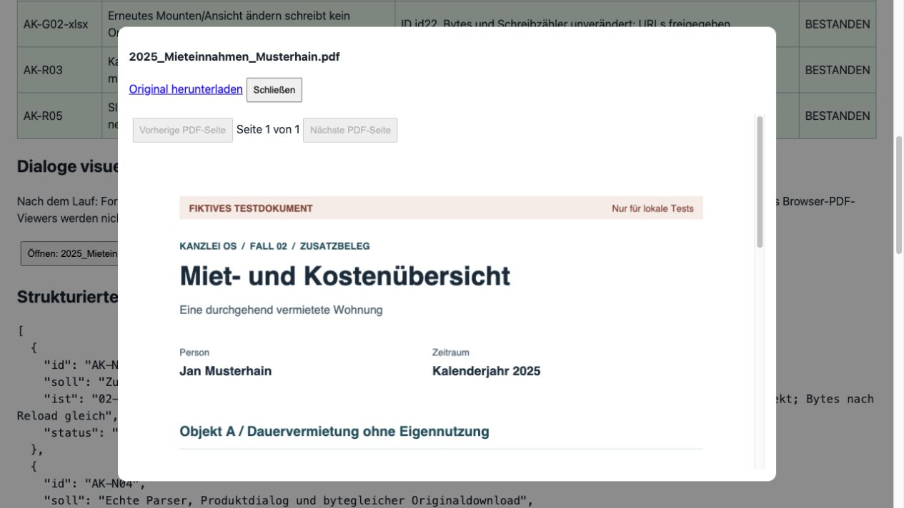
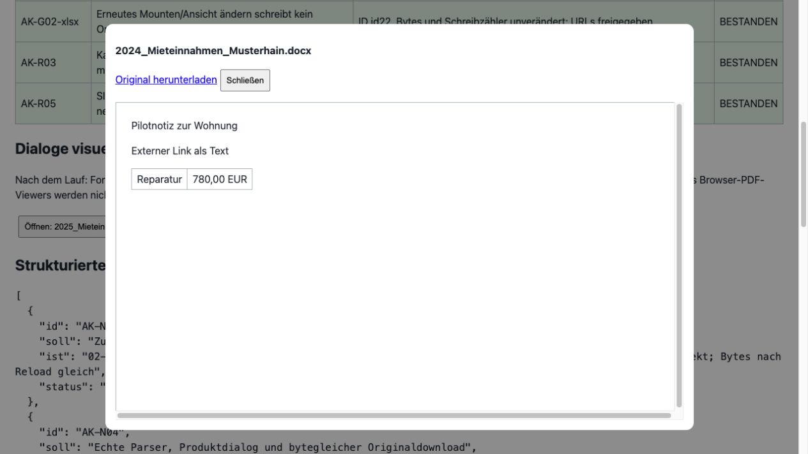
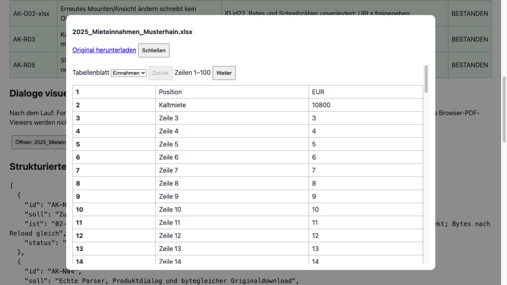
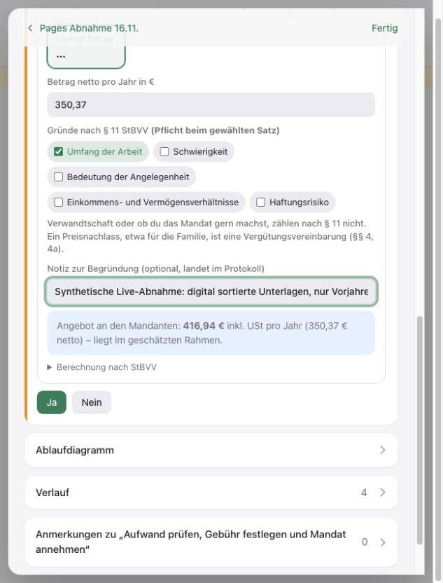

16. November 2026 · Integrierter lokaler Stand einschließlich Anlage V je Mietobjekt.
Veröffentlicht und live geprüft: 11 von 11 Browserfällen bestanden.
Nachweise: 11 Browserfälle · Anlage V nach Reload · Fragebogen und Gebühr




Die Browserprüfung verwendet ausschließlich synthetische Daten und einen eigenen Dateinamenraum. Sie löscht keine vorhandenen Mandantendaten. Eine pauschale Fehlerfreiheit aller denkbaren Fachfälle wird damit nicht behauptet.
Die Demo speichert Eingaben und Dateien im Browser des jeweiligen Nutzers. Sie hat keinen zentralen Eingang, keine echte Anmeldung und keine serverseitige Mandantentrennung. Ein Upload in diese Demo übermittelt daher nichts an die Kanzlei.
Empfohlener nächster Schritt: ein geschlossener ESt-Pilot. Dazu muss nicht die gesamte Kanzleiplattform oder ERiC fertig sein.
Der bestehende vollständige Archivexport ist ein lokales Werkzeug: Er enthält Originale und den gesamten Datenbestand, ist selbst nicht verschlüsselt und ersetzt keinen geschützten Übertragungsweg. Ein einfacher JSON-Standexport enthält dagegen nicht die Originaldateien.
Bis zum geschlossenen Pilot sind betreute Tests mit synthetischen oder sorgfältig anonymisierten Unterlagen möglich. Echte Unterlagen sollten nicht in der öffentlichen Demo getestet werden.
Grundlagen: GitHub Pages: Nutzungsgrenzen · BStBK: Datenschutz · BfDI: Muster Auftragsverarbeitung.